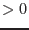

| Parameter | Mand | Type | Default | Constraints |
| evimageset | yes | dataset | ' ' | none |
Input image file (from emeventsproj)
|
| badpixset | no | dataset | badpix.out | none |
Output bad pixels file
|
| incremental | no | boolean | no | yes/no |
Add newly found bad pixels to the bad pixels file contents
|
| probathreshold | no | real | |
|
False detection probability per pixel
|
| halfwidth2d | no | integer | 2 |  |
Half width for 2D searches (images)
|
| findbadsegments | no | boolean | yes | yes/no |
Look for bad segments of rows or columns as well
|
| halfwidth1d | no | integer | 3 | |
Half width for 1D searches (columns/rows)
|
| findbright | no | boolean | yes | yes/no |
Look for too bright pixels, rows and columns
|
| minratio | no | real | 1.5 | |
Minimum ratio to neighbours for bright features (when findbright=Y)
|
| finddead | no | boolean | yes | yes/no |
Look for too dark pixels, rows and columns
|
| maxratio | no | real | 0.5 | |
Maximum ratio to neighbours for dark features (when finddead=Y)
|
| niter | no | integer | 10 | |
Maximum number of iterations of the full detection process
|
| usecal | no | boolean | yes | yes/no |
Get uplinked and dead pixels from the CAL
|
| includedeadpixels | no | boolean | no | yes/no |
Include dead pixels from CAL in output list
|
| ignoreccfbright | no | boolean | no | yes/no |
Ignore the bright pixels declared in the CAL (except uplinked)
|
| Parameter | Mand | Type | Default | Constraints |